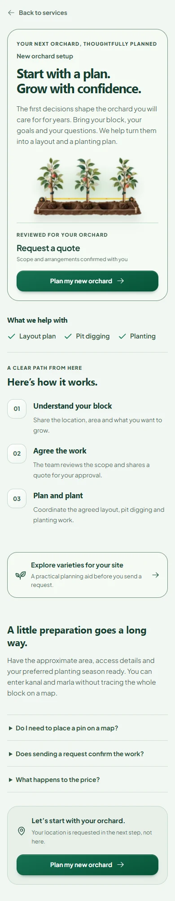

Independent studio · Kashmir, India
Good work.
In plain sight.
We turn real-world problems into digital products. Here’s what that looks like.
KashCrop / Selected workReal screens · Local build



Actual product captures. Local builds are identified in the viewer.
More to explore ↓The details
make the difference.
A closer look at the interfaces behind the introductions. Open a project and explore its screens.
Designed with care.
Built to be used.
KashCrop Innovations brings product design, full-stack engineering and applied AI together. Based in Kashmir and incubated at SKIIE, SKUAST-Kashmir, we build around the people doing the work.
Let’s talk about your project